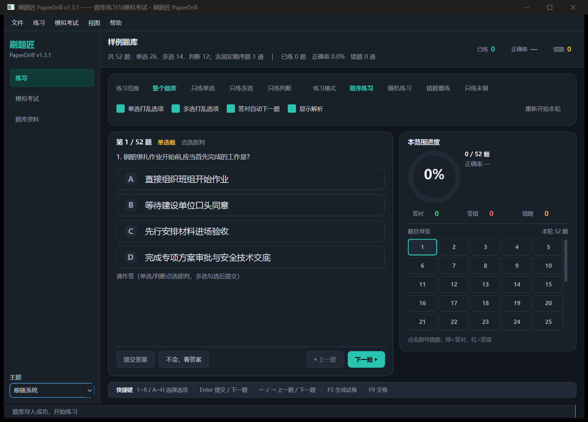

导入 Excel / Word / PDF 题库，实时判题、错题本、按题型练习、自定义蓝图生成试卷做真实模拟考试，进度自动保留；可按题库删减不想练的题目，并在最近使用的题库之间快速切换。
单选 / 多选 / 判断，统一渲染与判题
Excel、CSV、TXT、JSON、Word（表格型 / 段落文本型）、PDF（文本型）
单选与判断点选即判，多选提交判；显示正确答案与解析
顺序 / 随机 / 错题重练 / 只练未做，可叠加按题型练习
5 列题号方格，点击跳题；答对绿、答错红、未答灰，当前题高亮，题多时内部滚动
题量与题型占比任意配置，一轮覆盖全部题目，末卷自动补题
作答期不提示对错，交卷一次性评分：总分、正确率、各题型明细、逐题明细
题目指纹定位，题库增删或改名自动继承进度；关闭再打开仍停在上次那道题
练习模式与范围分别记忆位置，切走再切回来仍停在各自上次的题
排除不想练的题目（不改题库文件，可随时恢复）；最近使用的题库一键切换
1~8 选答案、Enter 提交/下一题、← → 翻题、F9 交卷；页面底部常驻提示条
深浅主题、高 DPI、窗口/任务栏图标、无闪窗重绘
练习页：题卡内作答按钮、右侧题目导览、底部快捷键长条。

| 格式 | 说明 |
|---|---|
| Excel / CSV / TXT | 列头 题型 | 题目标题 | 选项A…选项H | 解析 | 答案；
列名可用同义词、列顺序不限、首行可以是标题、列头可写在前 20 行内 |
| Excel（单列选项版式） | 题库模板导出常见：
序号 | 题型 | 试题正文 | 试题选项 | 试题答案，选项写在一列里以 ; 分隔，
字母可写可不写（A、F15;B、F25、A绑扎连接;B焊接、正确;错误） |
| Word（.docx） | 表格型（列头同上）或段落文本型（题干、选项、答案分行；
答案可写在题干括号里，如 （C）、（ BCE ）、（√）） |
| 读取文本层（扫描件不支持）：先按段落解析，再用「多空格分列」兜底 | |
| JSON | 中文键（题型/题目标题/选项A…）
或英文键（type/stem/optionA…）均可 |
无法解析的行不会进入题库，但会给出「行号 + 原因 + 题干片段」。示例题库由 tools/make_samples.py 生成（合成内容，不含任何真实单位数据）。
直接用：从 Releases 下载
PaperDrill.exe，双击运行 → 导入题库 → 开始使用（无需安装 Python）。
# 从源码运行 python -m venv .venv .venv\Scripts\activate pip install -r requirements.txt python tools/make_samples.py # 生成合成示例题库 set PYTHONPATH=src python -m paperdrill --bank samples\示例题库.xlsx
pip install -r requirements-dev.txt python tools/make_samples.py python tools/make_icon.py set QT_QPA_PLATFORM=offscreen python -m unittest discover -s tests # 或 pytest -q ruff check src tools tests # 代码检查 # 打包单文件 exe（含 Qt 运行时与图标） powershell -ExecutionPolicy Bypass -File build_exe.ps1 # 另出文件夹版（启动更快）：追加 -Portable
CI 在每次推送时运行完整测试、Qt 无头自检（--qt-selftest）与打包烟测；
打 v* 标签自动发布 Release。